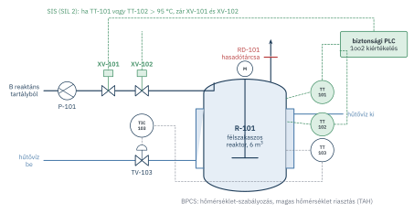

függelék B — A három esettanulmány
A könyv módszereit három kitalált, de valós mérnöki problémákat modellező esettanulmány köti össze. Ez a függelék összefoglalja a leírásukat, a számításokban használt adatokat és a fejezetekben kapott eredményeket. A számértékek a szakirodalomban szokásos nagyságrendekben mozognak; a ReaktorVéd minden számát egyetlen Python-szkript állítja elő, amely a könyv forrásában (_shared/esetek/) és a gyakorlati útmutató notebookjaiban is megtalálható, így minden eredmény reprodukálható.
B.1. A – ReaktorVéd: exoterm reaktor védelmi rendszere
A folyamat. Félszakaszos üzemű keverős reaktor, amelyben exoterm reakció zajlik. A B reaktánst a P-101 szivattyú adagolja két, sorba kötött gyorszáró szelepen (XV-101, XV-102) át. A reakcióhőt a köpenyben áramló hűtővíz vonja el; a hőmérsékletet a TIC-103 szabályozó tartja az alapjelen. A reaktoron hasadótárcsa (RD-101) is van, amelynek kétfázisú áramlásra való méretezése az elemzés idején nem igazolt (5. fejezet).

A veszélyes forgatókönyv. A hűtővíz kiesése (évi 0,1 gyakorisággal) exoterm fázisban (az esetek felében) megfutó reakcióhoz, a reaktor felhasadásához, mérgező kibocsátáshoz és halálos sérüléshez vezethet. A vállalati kritérium szerint egy halálos kimenetelű forgatókönyv tolerálható gyakorisága \(10^{-5}\)/év.
A biztonsági funkció. Két hőmérséklet-távadó (TT-101/102, 1oo2) méri a reaktor hőmérsékletét; 95 °C fölött a tanúsított biztonsági PLC mindkét gyorszáró szelepet zárja (1oo2 a „zárás” funkcióra), 10 másodpercen belül. A végleges kialakítás hibabiztos: a szelepek energiamentesítésre zárnak, a távadók élő nullás áramhurokkal csatlakoznak, a tápellátás redundáns.
| Paraméter | Érték | Fejezet |
|---|---|---|
| kezdő esemény (hűtővíz-kiesés) | \(0{,}1\)/év | 3., 11. |
| feltételt teremtő tényező (exoterm fázis) | \(0{,}5\) | 11. |
| riasztás és kezelői beavatkozás (IPL) | PFD \(= 0{,}1\) (SPAR-H szerint ≈ 0,04) | 11., 16. |
| tolerálható gyakoriság | \(10^{-5}\)/év | 3. |
| a SIF szükséges PFD-je | \(\le 2\cdot10^{-3}\) (SIL 2, RRF ≥ 500) | 11. |
| távadók | \(\lambda_{DU} = 4\cdot10^{-7}\), \(\lambda_{DD} = 6\cdot10^{-7}\), \(\lambda_S = 5\cdot10^{-7}\,\text{h}^{-1}\); \(\beta = 5\%\), \(\beta_D = 2{,}5\%\) | 13. |
| biztonsági PLC | PFD \(= 5\cdot10^{-5}\), SIL 3-ra tanúsított | 13. |
| gyorszáró szelepek | \(\lambda_{DU} = 2{,}5\cdot10^{-6}\,\text{h}^{-1}\), \(\beta = 10\%\) | 13. |
| proof teszt időköze, javítási idő | \(T_1 = 8760\) h, MTTR \(= 8\) h | 13. |
| tápegység (energiával működtetett változat) | igénykori kiesés \(10^{-3}\) | 10. |
Az eredmények áttekintése. A B.2. táblázat megmutatja, hogyan finomodott a biztonsági funkció értékelése a könyv során. A sorozat maga is tanulság: a naiv blokkdiagram nagyságrenddel optimistább a helyes eredménynél, az első tervváltozat rejtett egypontos hibákat tartalmazott, és a próbák minősége döntően befolyásolja az eredményt.
| Modell, változat | Eredmény | Fejezet |
|---|---|---|
| megbízhatósági blokkdiagram (független elemek) | PFD \(\approx 1{,}7\cdot10^{-4}\) | 9. |
| hibafa, energiával működtetett szelepek, közös tápegységek | PFD \(= 2{,}17\cdot10^{-3}\) | 10. |
| hibafa, hibabiztos kialakítás, közös okok nélkül | PFD \(= 1{,}73\cdot10^{-4}\) | 10. |
| hibafa, hibabiztos kialakítás, β-tényezős közös okokkal | PFD \(= 1{,}335\cdot10^{-3}\) | 10. |
| többfázisú Markov-modell (csak a szelepek) | PFD \(= 1{,}22\cdot10^{-3}\) | 12. |
| IEC 61508-6 képletek (a végleges igazolás) | PFD \(= 1{,}369\cdot10^{-3}\), RRF \(= 731\) | 13. |
| 90%-os proof teszt lefedettséggel | PFD \(= 2{,}69\cdot10^{-3}\) (nem teljesül) | 13. |
| havi részleges löketpróbával | PFD \(= 6{,}63\cdot10^{-4}\), RRF \(= 1508\) | 13. |
| reaktorfelhasadás gyakorisága (eseményfa) | \(6{,}8\cdot10^{-6}\)/év | 11. |
| egy kezelő egyéni kockázata ebből | \(1{,}5\cdot10^{-6}\)/év | 3. |
| téves leállások (egyszeres → redundáns táp → 2oo3 távadók) | \(0{,}133 \to 0{,}046 \to 0{,}026\)/év | 13. |
B.2. B – VészFék: automatikus vészfékező asszisztens
A funkció. Személygépkocsi vészfékező asszisztense (AEB), amely a radar és a kamera adatai alapján felismeri a jármű előtti akadályokat (járművek, gyalogosok, kerékpárosok), figyelmezteti a vezetőt, és ha az nem reagál, önállóan fékez. A rendszer elemei: frontradar (77 GHz), frontkamera, érzékelőfúziós és döntési vezérlőegység, valamint az elektrohidraulikus fékaktuátor és a stabilitásvezérlő, amely a fékezést végrehajtja. A funkció a vezető kiegészítője (SAE J3016 szerint legfeljebb 2. szint), ezért hibára elnémuló kialakítású: hiba esetén kikapcsol és jelez (14. fejezet).
A két veszély. A funkció kétféleképpen okozhat kárt: indokolatlan erős fékezéssel (ráfutásos baleset) és a fékezés elmaradásával (ütközés). A HARA szerint az indokolatlan teljes erejű fékezés autópályán, követő jármű jelenlétében S3, E4, C3, azaz ASIL D (4. fejezet); a biztonsági cél az, hogy a funkció ne kezdeményezhessen indokolatlan, egy határértéknél nagyobb lassulású fékezést 60 km/h fölött.
A fejezetekben. A VészFék a balesetek tanulságainál (a tempei baleset, 1. fejezet), a funkcionális veszélyelemzésnél (5. fejezet), a radarérzékelő FMEA-jánál (6. fejezet), az STPA nem biztonságos irányítási műveleteinél (7. fejezet), a két csúcseseményű hibafánál (10. fejezet), a hardvermetrikáknál (13. fejezet), a hibaviselkedési stratégiáknál (14. fejezet), a szoftver és a gépi tanulás határán (15. fejezet), az ember mint tartalék kérdésénél (16. fejezet), a kétágú biztonsági érvelésnél (17. fejezet) és a SOTIF kiváltó feltételeinél (18. fejezet) jelenik meg.
B.3. C – KoboCella: kollaboratív robotcella
A cella. Egy szerelőcella, amelyben egy könnyű, kollaboratív robotkar és egy szerelő közös munkatérben dolgozik. A fő veszélyek a robotkar mozgási energiája (ütközés) és a megfogó szorítóereje (becsípődés).
A biztonsági funkciók. Sebesség- és távolságfelügyelet: ha a lézerszkenner a robot 1,2 m-es körzetében személyt érzékel, a robot sebessége legfeljebb 250 mm/s; 0,5 m-en belül a robot biztonságosan megáll. Erő- és teljesítménykorlátozás az ISO/TS 15066 biomechanikai határértékei szerint. Hiba esetén a hajtások biztonságos nyomatékmentesítése (STO).
| Jellemző | Érték | Fejezet |
|---|---|---|
| szükséges teljesítményszint a sebességfelügyeletre | PLr = e (S2, F2, P2); inherens tervezéssel (S1) PLr = c lehetne | 4. |
| architektúra | 4-es kategória, kétcsatornás (1oo2), kölcsönös diagnosztika | 9., 14. |
| a biztonságos megállítás PFH-ja | \(1{,}01\cdot10^{-8}\,\text{h}^{-1}\) (PL e) | 13. |
| a robothajtás csapágyainak Weibull-paraméterei | \(\beta = 2{,}73\), \(\eta = 10\,170\) h, MTTF ≈ 9050 h | 8. |
| rendelkezésre állás gyakori biztonsági megállásokkal | 0,968 (óránként 6 belépés, 20 s megállás) | 12. |
A fejezetekben. A KoboCella a háromlépcsős kockázatcsökkentésnél (3. fejezet), az előzetes veszélyelemzésnél (5. fejezet), a PLr meghatározásánál (4. fejezet), az STPA részletes példájában (7. fejezet), a Weibull-elemzésnél (8. fejezet), a nagy igénybevételű eseményfánál (11. fejezet), a biztonság és a rendelkezésre állás kapcsolatánál (12. fejezet), a PFH-számításnál (13. fejezet), az ember–robot együttműködés emberi tényezőinél (16. fejezet), a műszaki dokumentációnál (17. fejezet) és a gépi tanulásos személyfelismerés szabályozási kérdéseinél (18. fejezet) szerepel.